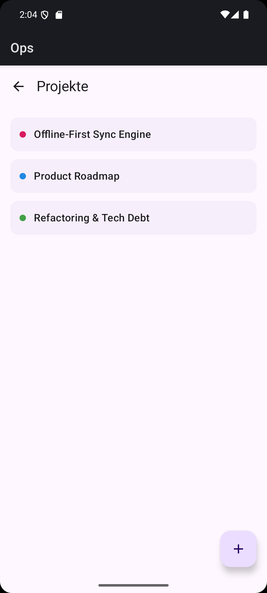
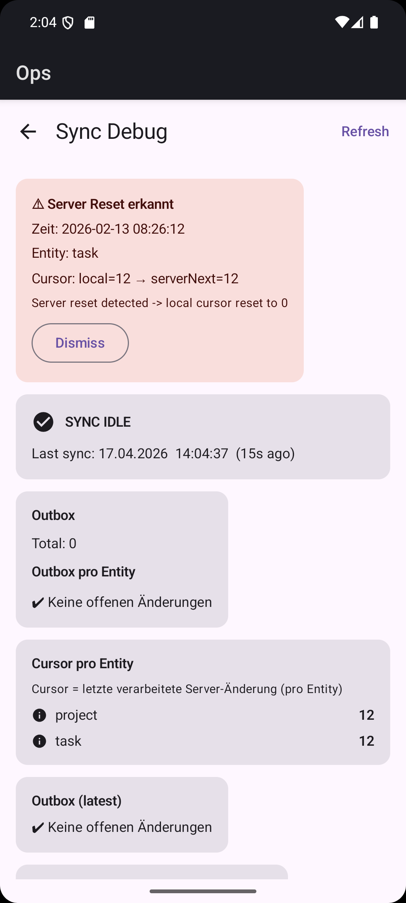

Überblick
Ops ist ein Synchronisationskonzept für Offline-First-Anwendungen. Ziel war eine robuste Verarbeitung von lokalen Änderungen, Server-Updates und Wiederholungen, ohne die Nachvollziehbarkeit des Systemzustands zu verlieren.
Problemstellung
Synchronisation wird komplex, sobald mehrere Geräte, instabile Verbindungen und wiederholte Requests zusammenkommen. Ohne saubere Modellierung entstehen Konflikte, doppelte Operationen und schwer erklärbare Zustände.
Architekturansatz
Offline-First Local DB
Änderungen werden zuerst lokal gespeichert, damit die Anwendung auch ohne Verbindung verlässlich nutzbar bleibt.
Outbox Pattern
Lokale Operationen werden protokolliert und kontrolliert an den Server übergeben, statt direkt und unstrukturiert synchronisiert zu werden.
Idempotenter Push
Wiederholte Übertragungen bleiben sicher, weil identische Änderungen nicht zu doppelten Ergebnissen führen.
Cursor-basierter Pull
Server-Änderungen werden inkrementell geladen, wodurch der Synchronisations- verlauf effizient und nachvollziehbar bleibt.
Technische Features
Ergänzt wurde das System um Sync-Debug- und Transparenzmechanismen, damit Outbox-Zustand, Cursor-Fortschritt und Reset-Szenarien sichtbar und besser analysierbar bleiben.
Sync Debug & Transparenz



Herausforderungen
Die größte Herausforderung bestand darin, Konsistenz und Wiederholbarkeit sicherzustellen, ohne die Architektur unnötig schwergewichtig zu machen. Gleichzeitig musste der Sync-Zustand für Analyse und Debugging transparent bleiben.
Learnings
Verlässliche Synchronisation beginnt bei einer guten Änderungsmodellierung. Offline-First erfordert nicht nur lokale Persistenz, sondern klar definierte Datenflüsse, idempotente Kommunikation und gute Sichtbarkeit auf den Zustand des Systems.